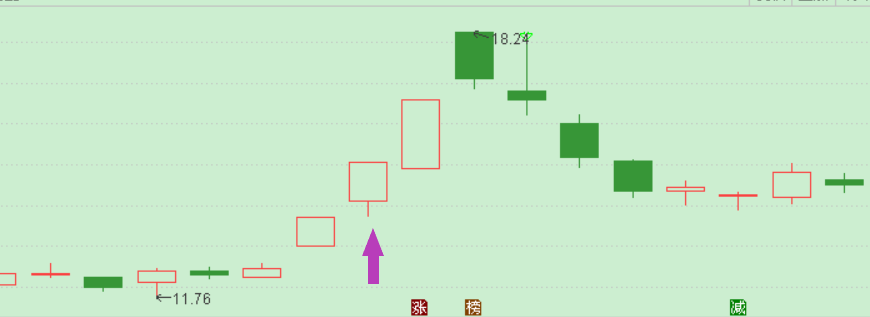

红K阳线_光头下影线阳线
作者：波哥
背景资料
上节课我们一起学习了红K阳线里的光脚上影线阳线，那么这节课我们一起认识一下红K阳线里的光头下影线阳线。
光头下影线阳线：

图中箭头所示就是光头下影线阳线
前一日是跳空高开涨停板，当日是跳空高开，然后获利盘下杀随后被接力资金拉起封板涨停，留出一根下引线，这种K线是上涨中继，表明资金有看好未来上涨空间进场接过筹码继续上攻。
如果从游资龙头战法来看，应该是二板选手接力首版挖掘席位的筹码，次日继续收了一个涨停，三板进一步被接力，最终四板晋级失败，回头看二板那根光头下影线阳线就是一个很好的进场机会。
当然做题材股我们不仅仅要研究技术方面的K线，还要去掌握这个题材里的龙头股，助功股第二天集合竞价和盘中的联动性，从而判断次日市场情绪的认可态度，这样才能增加取胜把握。